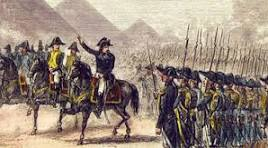

الاختبار القبلي (قياس المستوى)
🎯 الأهداف الإجرائية:
- أن يحلل الطالب أسباب الحملة الفرنسية ومقارنة المجتمعات.
- أن يستنتج الآثار العلمية والسياسية للحملة.
🟦 الوحدة الأولى: الحملة الفرنسية
🔹احوال مصر قبل الحمله و دخول الحمله الفرسيه : تدهور اقتصادي وجمود ثقافي تحت الحكم العثماني.كان الحكم الفعلي في يد المماليك رغم أن مصر كانت تابعة للدولة العثمانية. وكان المماليك يتنازعون السلطة فيما بينهم، مما أدى إلى عدم الاستقرار السياسي وكثرة الصراعات. كما كانت الحالة الاقتصادية ضعيفة بسبب فرض الضرائب الكثيرة على الفلاحين والتجار، مما أدى إلى تدهور الزراعة وتراجع التجارة. بالإضافة إلى ذلك، كانت الحالة الاجتماعية صعبة، حيث عانى الناس من الفقر وانتشار الظلم وغياب العدالة، مع ضعف الخدمات وانتشار الجهل والأمراض في بعض المناطق. أما دخول الحملة الفرنسية إلى مصر فكان في عام 1798 بقيادة القائد الفرنسي نابليون بونابرت، وجاءت الحملة بهدف السيطرة على موقع مصر الاستراتيجي ومنافسة بريطانيا في طريق التجارة إلى الهند. دخلت القوات الفرنسية مصر عبر مدينة الإسكندرية بعد أن تمكنت من هزيمة المماليك في معركة إمبابة، ثم اتجهت إلى القاهرة وسيطرت عليها. وقد صاحب الحملة جانب علمي أيضًا، حيث جاءت مجموعة من العلماء لدراسة مصر من مختلف الجوانب، مما أدى لاحقًا إلى اكتشافات مهمة مثل فك رموز حجر رشيد. ورغم ذلك، واجهت الحملة مقاومة من المصريين، وانتهت بخروج الفرنسيين من مصر عام 1801
🔹 النتائج: أدت الحملة إلى إضعاف حكم المماليك بشكل كبير، وبدأت مرحلة جديدة من التغير في نظام الحكم في مصر، كما زاد التدخل الأجنبي في شؤون البلاد. ومن الناحية الاجتماعية، أثرت الحملة في المجتمع المصري من خلال احتكاك المصريين بالفرنسيين، وظهور بعض الأفكار الجديدة عن التنظيم والإدارة، رغم استمرار معاناة الناس من الاضطرابات خلال فترة الاحتلال. أما من الناحية العلمية، فقد كانت من أهم نتائج الحملة مجيء مجموعة من العلماء الفرنسيين الذين قاموا بدراسة مصر من جميع الجوانب، مثل التاريخ والجغرافيا والآثار والطبيعة، وأصدروا كتاب “وصف مصر” الذي يعد من أهم المراجع عن مصر في ذلك الوقت. كما ساعدت الحملة على اكتشاف حجر رشيد الذي كان سببًا في فك رموز اللغة المصرية القديمة لاحقًا. وبشكل عام، يمكن القول إن الحملة الفرنسية رغم كونها احتلالًا عسكريًا، إلا أنها تركت آثارًا علمية وثقافية مهمة في تاريخ مصر.

🎯 الأهداف الإجرائية:
- أن يحلل الطالب تطورات العصر في ظل حكم محمدعلي على مصر.
- أن يقارن بين أحوال المجتمع المصري والفرنسي قبل عصر محمدعلي .
- أن يوضح دور الشعب المصري في عصرمحمد علي .
- أن يستنتج الآثار العلمية والسياسية لعصر محمد علي.
🟦 الوحدة الثانية: عصر محمد علي
🔹 نظام الاحتكار: وهو أن الدولة أصبحت تتحكم في إنتاج وبيع المحاصيل الزراعية والمنتجات الصناعية. بمعنى أن الفلاح كان يزرع الأرض لكن لا يملك حرية بيع محصوله في السوق، بل تقوم الحكومة بشرائه منه بسعر تحدده هي، ثم تقوم ببيعه أو تصديره لتحقيق أرباح للدولة. وكان الهدف من هذا النظام هو زيادة دخل الدولة وتقوية الاقتصاد وبناء دولة حديثة قوية، لكن في نفس الوقت أدى إلى زيادة سيطرة الحكومة على الفلاحين وتقييد حريتهم الاقتصادية.
🔹 القوة العسكرية:فأنشأ جيشًا نظاميًا يعتمد على التدريب والانضباط واستخدام الأسلحة الحديثة، واستعان بالخبراء الأجانب لتدريب الجنود. كما أنشأ مدارس عسكرية لتعليم الضباط، وبنى أسطولًا بحريًا قويًا، وأنشأ مصانع للسلاح لتوفير احتياجات الجيش داخل مصر. وكان هدفه من ذلك تكوين قوة عسكرية حديثة تمكنه من حماية حكمه وتوسيع نفوذه داخل مصر وخارجها.

ما رأيك في سياسة الاحتكار التي اتبعها محمد علي؟
🟦 الوحدة الثالثة: مصر منذ الثورة العرابية حتى الاحتلال
🎯 الأهداف الإجرائية:
- أن يحلل الطالب أسباب الاحتلال على مصر.
- أن يقارن بين أحوال المجتمع المصري والفرنسي قبل الاحتلال.
- أن يوضح دور الشعب المصري في مقاومة الاحتلال.
- أن يستنتج الآثار العلمية والسياسية للاحتلال.
🔹 الأزمة المالية: ومن هنا ظهرت الثورة العُرابية بقيادة أحمد عرابي عام 1881، وكانت حركة وطنية قادها الجيش ضد الظلم والاستبداد وضد التدخل الأجنبي في شؤون البلاد، ورفعت شعار “مصر للمصريين”. وقد طالب الثوار بالدستور والعدل وتساوي المصريين في الحقوق داخل الجيش والدولة. لكن هذه الثورة واجهت تدخلًا أجنبيًا قويًا، حيث استغلت بريطانيا الأوضاع وأرسلت قواتها إلى مصر بحجة حماية الاستقرار. وفي عام 1882 وقع الاحتلال البريطاني لمصر بعد معركة التل الكبير، وبذلك أصبحت مصر تحت السيطرة البريطانية رغم أنها ظلت اسمياً تابعة للدولة العثمانية. وهكذا كانت الأزمة المالية هي السبب في التدخل الأجنبي، وكانت الثورة العرابية محاولة وطنية لاستعادة الاستقلال، لكنها انتهت بوقوع الاحتلال البريطاني الذي استمر سنوات طويلة.
🔹 الثورة العرابية 1881:ومن هنا ظهرت الثورة العُرابية بقيادة أحمد عرابي عام 1881، وكانت حركة وطنية قادها الجيش ضد الظلم والاستبداد وضد التدخل الأجنبي في شؤون البلاد، ورفعت شعار “مصر للمصريين”. وقد طالب الثوار بالدستور والعدل وتساوي المصريين في الحقوق داخل الجيش والدولة. لكن هذه الثورة واجهت تدخلًا أجنبيًا قويًا، حيث استغلت بريطانيا الأوضاع وأرسلت قواتها إلى مصر بحجة حماية الاستقرار. وفي عام 1882 وقع الاحتلال البريطاني لمصر بعد معركة التل الكبير، وبذلك أصبحت مصر تحت السيطرة البريطانية رغم أنها ظلت اسمياً تابعة للدولة العثمانية. وهكذا كانت الأزمة المالية هي السبب في التدخل الأجنبي، وكانت الثورة العرابية محاولة وطنية لاستعادة الاستقلال، لكنها انتهت بوقوع الاحتلال البريطاني الذي استمر سنوات طويلة.
ما رأيك في تدخل الاحتلال في شؤون الدولة؟
🎯 الأهداف الإجرائية:
- أن يحلل الطالب أسباب الاستعمار على مصر.
- أن يقارن بين أحوال المجتمع المصري والفرنسي قبل الاستعمار.
- أن يوضح دور الشعب المصري في مقاومة الاستعمار.
- أن يستنتج الآثار العلمية والسياسية الاستعمار.
🟦 الوحدة الرابعه: العرب والاستعمار
🔹 التوسع الاستعماري: بدأت إنجلترا وفرنسا في التوسع داخل العالم العربي في أواخر القرن التاسع عشر وبداية القرن العشرين، فسيطرت بريطانيا على مصر عام 1882 ثم توسعت في السودان والعراق والخليج العربي، وكان هدفها الأساسي حماية طريقها إلى الهند والسيطرة على قناة السويس ومصادر النفط لاحقًا. أما فرنسا فقد ركزت على شمال أفريقيا، فاحتلت الجزائر ثم تونس والمغرب، كما سيطرت على سوريا ولبنان بعد الحرب العالمية الأولى. وكان أسلوب الاستعمار يعتمد على الاحتلال العسكري والسيطرة السياسية والاقتصادية، مع نشر النفوذ الثقافي ومحاولة التأثير على المجتمعات العربية
🔹 الحرب العالمية الأولى: اندلعت الحرب العالمية الأولى عام 1914 بين قوتين كبيرتين: دول الحلفاء (مثل بريطانيا وفرنسا وروسيا) ودول المحور (مثل ألمانيا والدولة العثمانية). وقد كانت من أسبابها التنافس الاستعماري بين الدول الأوروبية والصراعات السياسية والعسكرية. وخلال الحرب، دخلت الدولة العثمانية إلى جانب ألمانيا، مما جعل أراضيها في الوطن العربي هدفًا مباشرًا للقوى الاستعمارية. واستغلت بريطانيا وفرنسا الحرب لتقسيم البلاد العربية بعد انتهاء الصراع، حيث تم الاتفاق بينهما في اتفاقية سايكس بيكو على تقسيم مناطق النفوذ في المشرق العربي. وبعد انتهاء الحرب عام 1918 انهارت الدولة العثمانية، وبدأت مرحلة جديدة من الاستعمار الأوروبي المباشر في معظم الدول العربية، مما أدى إلى ضعف الوحدة العربية وزيادة حركات المقاومة ضد الاستعمار
ما رأيك في دور العرب مع الاستعمار؟